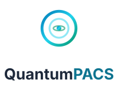
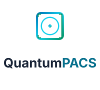

QuantumPACS
outer ring — r 18 · stroke 3 · brand gradientinner ring — r 10 · stroke 2 · secondary @ 50%orbit ellipse — rx 6 · ry 2.5 · accent @ 60%axis ticks — 2px rounded · gradient · top/bottomnucleus — r 2.5 · gradient fill · the patientBelow 24px the axis ticks and ellipse lose legibility — use the simplified favicon ring instead.
Wordmark is system-ui 700; “PACS” carries the secondary cyan (slate-300 on the dark rail). Minimum lockup width: 140px.
Two-ring mark (outer ring + nucleus) on the brand gradient — shipped in frontend/index.html.
Single-color marks for light backgrounds / B&W print (dark) and dark surfaces (light, reversed). Gradient is for brand moments only.

Icon above wordmark — social profiles, app-store listing, signage. Light/print variant (wordmark slate-800); use the mono-light icon on dark surfaces. Minimum width 120px.
logos/orbit-current-icon.svglogos/orbit-current-icon-mono-dark.svglogos/orbit-current-icon-mono-light.svglogos/orbit-current-lockup.svglogos/orbit-current-lockup-vertical.svglogos/orbit-current-favicon.svgfrontend/index.html· inlined favicon ring
Shipped mark. Same family treatment below for the recommended round-2 refinements.
logos/round2/qorbit-icon.svglogos/round2/qorbit-icon-mono-dark.svglogos/round2/qorbit-icon-mono-light.svglogos/round2/qorbit-favicon.svglogos/round2/qorbit-lockup-horizontal.svglogos/round2/qorbit-lockup-vertical.svg

logos/round2/aperture-icon.svglogos/round2/aperture-icon-mono-dark.svglogos/round2/aperture-icon-mono-light.svglogos/round2/aperture-favicon.svglogos/round2/aperture-lockup-horizontal.svglogos/round2/aperture-lockup-vertical.svg
logos/round2/ROUND2-REFINEMENT.mdlogos/CONCEPTS-EXPLORATION.mdlogos/COMPARISON-GALLERY.html· board + scoring- logos/EMAIL-SIGNATURE-KIT.html · copy-paste signatures
Recommended refinements — one owns the name (Q), the other the promise (clarity).
Keep the nucleus height (2.5u) clear on all sides of the icon. For the lockup, use the wordmark's x-height.
Below 24px the axis ticks and orbit ellipse blur — switch to the simplified favicon ring.
Do
- ✓ Keep the blue→cyan→teal gradient on the mark
- ✓ Use cyan-700 as the light-mode action color (AA)
- ✓ Render the wordmark on slate-900 only
- ✓ Cyan for action · teal for state · red for danger
- ✓ Mono type for DICOM IDs & accessions
Don't
- ✗ Flatten or recolor the gradient mark
- ✗ Use cyan-600 for buttons/links on white
- ✗ slate-400 as body text in light mode (≈2.7:1)
- ✗ Purple "AI" gradients or neon accents
- ✗ Emojis as icons — SVG only